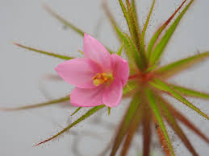

Roridulaceae
Dewstick Family
Roridulaceae is a small, fascinating family containing a single genus, Roridula, with just two species of shrubs or subshrubs endemic to the fynbos vegetation of the Cape Floristic Region, South Africa. They are renowned for being protocarnivorous or involved in a carnivorous symbiosis; their leaves are densely covered with sticky, stalked glands that trap numerous insects, but they lack digestive enzymes. Instead, they rely on symbiotic assassin bugs (Pameridea) or spiders that live on the plants, consume the trapped prey, and provide nutrients to the plant via their excrement.
Overview
The Roridulaceae family, consisting solely of the genus Roridula, represents a unique evolutionary strategy within the plant kingdom. Native exclusively to the nutrient-poor soils of South Africa's Cape region, these "dewstick" plants have evolved a remarkable method for nutrient acquisition. While their sticky leaves effectively trap insects like flypaper, they cannot digest the prey themselves. This led to their classification as protocarnivorous.
The key to their success lies in a mutualistic relationship with specialized insects, primarily assassin bugs of the genus Pameridea, and sometimes spiders. These symbionts are adapted to move freely on the sticky leaves, feeding on the trapped insects. The plant then absorbs essential nutrients, particularly nitrogen and phosphorus, from the excrement deposited by these bugs onto the leaf surfaces. This indirect method of benefiting from trapped prey is a fascinating example of co-evolution.
Phylogenetically, Roridulaceae belongs to the order Ericales, placing it among relatives like heathers (Ericaceae), kiwifruit (Actinidiaceae), and pitcher plants (Sarraceniaceae), showcasing the diverse evolutionary pathways within this large order.
Quick Facts
- Scientific Name: Roridulaceae
- Common Name: Dewstick Family
- Number of Genera: 1 (Roridula)
- Number of Species: 2
- Distribution: Endemic to Cape Floristic Region, South Africa.
- Evolutionary Group: Eudicots - Ericales
- Habitat: Nutrient-poor, acidic soils in fynbos vegetation.
- Nutrition: Protocarnivorous / Carnivorous-symbiotic.
Key Characteristics
Growth Form and Habit
Evergreen shrubs or subshrubs with woody stems.
Leaves
Leaves are alternate, simple, linear or lanceolate in shape, often crowded towards the tips of branches. Margins are entire or possess glandular teeth (R. dentata). The entire leaf surface (except sometimes the very base) is densely covered with conspicuous stalked glands of various lengths. These glands exude a sticky, resinous substance (not water-based like Drosera) that traps insects effectively.
Stems
Stems are woody, erect or sprawling, often sparsely branched.
Roots
Possess a normal root system adapted to nutrient-poor, acidic soils.
Sexuality and Inflorescence
Inflorescences are terminal or axillary racemes or panicles, bearing several flowers. Flowers are perfect (bisexual).
Flowers
Flowers are actinomorphic (radially symmetrical), 5-merous, and relatively showy, typically pink or white.
- Sepals: 5, free or slightly fused at the base, persistent in fruit.
- Petals: 5, free, usually larger than the sepals, obovate or wedge-shaped.
- Stamens: 5, free, alternating with the petals. Anthers are relatively large and typically open via apical pores or short slits (poricidal/subporicidal dehiscence), sometimes associated with buzz pollination.
- Ovary: Superior, composed of 3 fused carpels, forming a 3-locular ovary. Placentation is axile, with few to many ovules per locule. A single style is present with a 3-lobed or capitate (head-like) stigma.
Fruits and Seeds
The fruit is a loculicidal capsule, meaning it splits open along the mid-line of each of the 3 locules to release the seeds. Seeds are relatively small, sometimes slightly winged.
Carnivorous Symbiosis
Plants lack digestive enzymes on their leaves. They rely on symbiotic hemipteran insects (assassin bugs, genus Pameridea) or sometimes spiders, which live unharmed on the sticky leaves. These symbionts consume insects trapped by the plant's glands. The plant then absorbs nutrients from the excrement left behind by the symbionts.
Field Identification
Identifying Roridulaceae is straightforward within its limited range due to its unique features:
Primary Identification Features
- Habit: Shrub or subshrub.
- Leaves: Linear or lanceolate, densely covered with obvious sticky, stalked glands (tentacles).
- Habitat/Location: Endemic to fynbos vegetation in the Cape Region of South Africa.
- Flowers: 5-merous, actinomorphic, pink or white, with 5 stamens.
- Fruit: 3-valved capsule.
- Symbionts: Often observed with small Pameridea assassin bugs moving among the sticky glands.
Secondary Identification Features
- Leaf Margins: Entire (R. gorgonias) or toothed (R. dentata).
- Inflorescence: Racemes or panicles.
- Anthers: Relatively large, opening by pores/slits.
Seasonal Identification Tips
- Year-round Features: The shrubby habit and distinctive sticky, glandular leaves are present year-round.
- Flowering Season: Typically occurs in spring and summer (September to February in South Africa).
- Fruiting Season: Capsules develop after flowering.
Common Confusion Points
While unique, the sticky leaves might cause confusion with other glandular plants:
- Droseraceae (Sundews, e.g., Drosera): Also have stalked sticky glands, but are typically herbaceous (often forming rosettes), glands usually have watery mucilage (not resinous), flowers have different structures, and they are true carnivores with digestive enzymes. Found worldwide, including the Cape.
- Byblidaceae (Rainbow Plants): Australian family of herbs/subshrubs with linear leaves covered in sticky glands, superficially similar. Flowers are zygomorphic with 5 stamens often curved to one side. Also considered protocarnivorous. Different order (Lamiales).
- Ericaceae (Heaths): Many Cape Ericaceae are shrubs with small, linear leaves, but they lack sticky, insect-trapping glands and have characteristic bell-shaped or tubular flowers.
The combination of shrubby habit, specific leaf gland type (sticky, resinous, non-digestive), 5-merous actinomorphic flowers, capsule fruit, Cape endemism, and association with Pameridea bugs is diagnostic for Roridulaceae.
Field Guide Quick Reference
Look For:
- Shrub/subshrub
- Leaves linear/lanceolate, sticky glands
- Endemic to Cape Region, S Africa
- Flowers actinomorphic, 5 petals, 5 stamens
- Fruit a capsule
- Often with symbiotic Pameridea bugs
- Protocarnivorous (traps but doesn't digest)
Key Variations:
- Leaf margin (entire vs. toothed)
- Flower color (pink vs. white)
- (Only two species)
Notable Examples
The family contains only two recognized species in the genus Roridula:

Roridula gorgonias
(No common name)
A shrub typically growing up to 1 meter tall, found in wetter fynbos habitats. It has linear, entire leaves covered in sticky glands and produces attractive pink flowers. It relies heavily on Pameridea roridulae for nutrient acquisition.

Roridula dentata
(No common name)
Often a larger shrub than R. gorgonias, found in drier, more mountainous fynbos. Distinguished by its lanceolate leaves which have distinctive glandular teeth along the margins. Flowers are typically white or pale pink. Also hosts Pameridea bugs.
Phylogeny and Classification
Roridulaceae is placed within the large and diverse eudicot order Ericales. This order includes families such as Ericaceae (heaths, rhododendrons), Primulaceae (primroses), Ebenaceae (ebonies), Sapotaceae (sapodillas), Theaceae (camellias), Actinidiaceae (kiwifruit), and the carnivorous families Sarraceniaceae (North American pitcher plants) and Nepenthaceae (tropical pitcher plants - though Nepenthaceae is in a different order, Caryophyllales, according to APG IV; Sarraceniaceae is in Ericales).
Molecular phylogenetic studies place Roridulaceae within the non-asterid part of Ericales. Its exact sister group relationship has varied slightly between studies but often points towards families like Actinidiaceae or a clade including Actinidiaceae and Ericaceae, or sometimes Sarraceniaceae. Regardless of the precise sister group, it represents a distinct lineage within the order, notable for its unique protocarnivorous habit involving symbiosis.
Position in Plant Phylogeny
- Kingdom: Plantae
- Clade: Angiosperms (Flowering plants)
- Clade: Eudicots
- Clade: Asterids
- Order: Ericales
- Family: Roridulaceae
Evolutionary Significance
Roridulaceae offers insights into several evolutionary processes:
- Protocarnivory and Symbiosis: Provides a unique model system for studying the evolution of carnivory in plants, representing an intermediate stage or an alternative pathway involving obligate symbiosis for nutrient gain from trapped insects.
- Convergent Evolution: The evolution of sticky-trap mechanisms resembles that seen in unrelated carnivorous plants like Drosera or Byblis, showcasing convergent solutions to nutrient acquisition in poor soils.
- Endemism and Speciation: Its restriction to the Cape Floristic Region, a global biodiversity hotspot, highlights processes of localized adaptation and speciation.
- Phylogenetic Placement: Helps understand the relationships and diversification patterns within the large and ecologically important Ericales order.